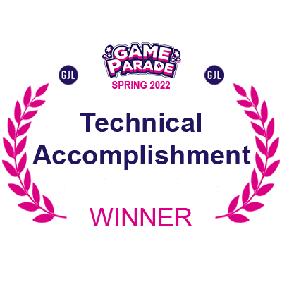
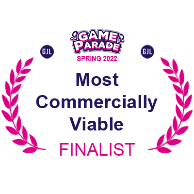
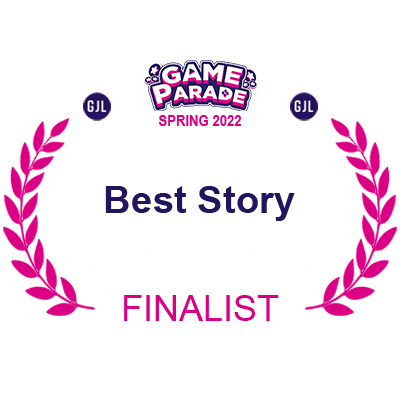
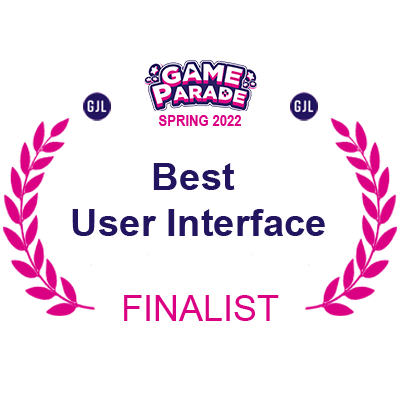

Sumbission to
Has ranked 9th out of 47 submissions in a community vote and achieved a score of 3.273/5
Received awards:





Description:
New Challange
After the relative success of Carcasscade, I was looking forward to the next edition of Game Parade. When it finally came, I was already prepared and armed with the experience gained with the previous project. This time the theme of the jam was “Every life counts”. This has immediately brought plenty of ideas, as running out of lives is quite prominent in most games that exist. I have decided to create something original, and approach the theme from a more storytelling perspective.
Ambitious goals
The first and most important thing that I wanted to introduce in this project, was a top-down perspective and a combat system. While working with a new type of movement wasn’t a great challenge, the latter has proven more difficult. Before I could seriously consider how the player is going to fight, I needed to have a few enemies to test it out on. I have opted for using a pathfinding add-on called AStar AI. Working with it has made the short time frame achievable.
Approaching deadline
I was half way through the time when I finished developing a satisfying combat system and adapting the AI to work well with it. Initially I had intended for the game to have multiple levels, each ending with a boss fight, but the approaching deadline has given me no choice but to let go of this ambition. This was the first time when I had to make cuts and change the project into something that would work on a smaller scale.
Making the best of what I had
I have decided to use its strengths and expand on them, cutting out the levels and leaving the boss fights that I considered to be more impressive as the entirety of the game. Now it serves more as a vertical slice and a proof of concept, and is much shorter than Carcasscade, I do however believe that every second of it is a fun, and challenging experience.
Final thoughts
This project has taught me even more about time management than I would like to learn. But with that, I have learned how to pull through in difficult times and make the best of the resources and time I’m given.